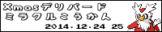

2015メリープミラクル交換大作戦
あけましておめでとうございます
2015年ひつじ年にちなんで、
1月2日〜4日の間
特に何の変哲もないメリープちゃんを全世界にばらまこうではないか！
という自己満足なイベントです。
十二支がない海外の人達にも日本の文化を分けてあげましょう！
興味がある方は是非、メリープちゃんを全世界へ羽ばたかせてあげて下さい。
また、メリープを受け取ったという方も、Twitterなどで是非教えてください！
※主催者のメリープちゃんはたまごから生まれたてのメリープちゃんになります。
周知のご協力お願いします！
Tweet
主催者

